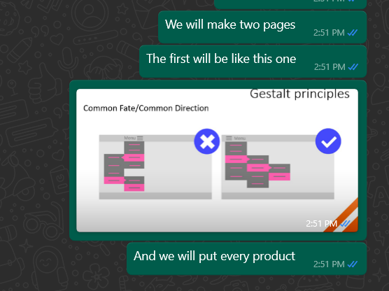
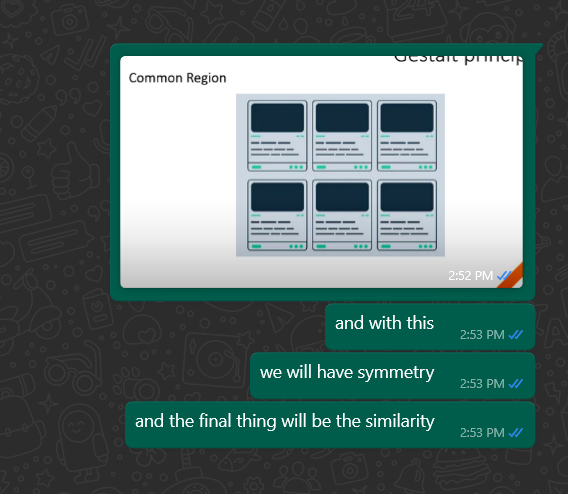
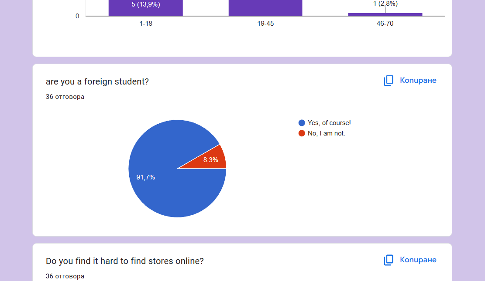
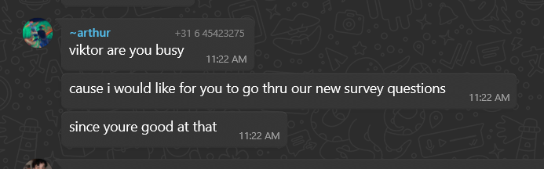

For a given assignment you - with guidance - make a planning (timing & part-tasks) with your team members. You make agreements about the expected quality. And while working on the implementation you take into ac- count the consequences of your chosen solution for the people and organisations involved.
When we started working on the group project, from the start we prepared a Project Plan, Team charter and everything needed in order for our Project to succeed. What went bad with our planning was that even though that we had a strict plan our first Prototype was not succesful at all. After we got feedback from Veerle we had a goal to make an updated Prototype. From the evidence shown on the picture, it can be seen that we made an agreement how to implement the Gestalt principles into our Figma prototype, which we needed. What I could do differently next time is to get more tips and ideas from the teachers before implementing it and have a better and not rushed communication with my group.
You notice and seize opportunities. You motivate your- self. You take responsibility for your actions. You work result-oriented on your assignments. You make consid- ered choices in your study programme. You recognize learning needs in yourself, are open to feedback, and reflect on this.
During our implementation of the new ideas for the updated Figma, I came up with this idea for one of our pages. As you can see from the first picture, I texted my groupmembers for the idea, which will be helpful and liked by the teachers since it will be result-oriented, and everyone agreed upon it. After a few weeks of working, I had a medical problem and had to be absent. During my absence I had lack of motivation and tried to overcome it. The only way was to face my actions and text my group, which found it normal and encouraged me in a way that I could not. If I have to look back on this situation, I will be more truthful with my group about my personal problems. Another thing that I will do is to be more open to feedback not only from my teachers, but also from my friends and group members.
You remain curious and ask questions throughout the solution process. You answer questions by using an appropriate approach: pragmatic, critical and based on sources.
When we first started giving ideas for the website, everyone was curious of what type of website and how it should be done. After we got our idea, the first thing we did was ask ourselves how we need to make it so it is student friendly, it helps them and it is sure that it will be used by them. We splitted stores into multiple categories and started choosing the ones that every student knows. We made a Google form, in which we asked the right questions with multiple answers which helped us quite a lot. What went well during this part was that we made two Google forms for two different ideas which really encouraged us into choosing only one of the ideas. Everyone was satisfied with the result.
You take the direct stakeholder into account when work- ing on an assignment. You pay attention to what you want to communicate and in which shape you do this. You recognize tasks within the group work, and take on your role within the group. You address others about their behaviour and role within the group.
Effective communication and collaborative efforts play a pivotal role in order for our work to prosper. During the assignments, we need to ensure that our works allign with the communicated in the group. Paying attention to how I communicate has helped me stay focused to prefernces of everyone. All of the research we have got helped us to implement our ideas to the best. Everyone took a role within the group work. Addressing others about their behavior and roles within the group has contributed to a healthy team dynamic.The things that I will do differently next time are to aim to further refine my communication skills and maintain continuous improvement within the team dynamic.